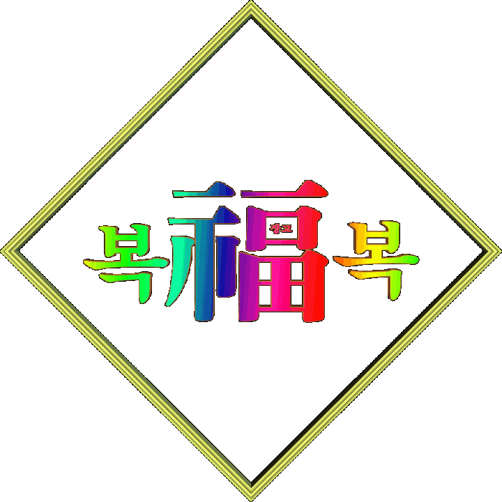
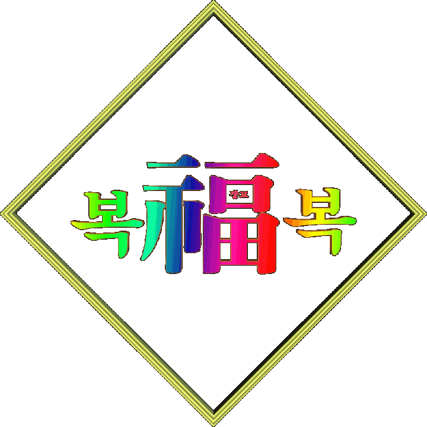
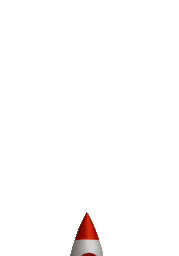
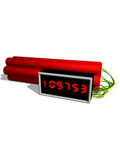
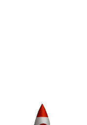
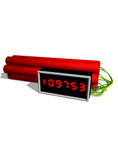

어디선가 본 듯하지만 도저히 맥락이 잡히지 않는 합성이미지를 마주할 때, 사람들은 종종 "류성실 같다"라고 말한다. 이는 단순히 난해해서가 아니라, 류성실의 작업이 만들어내는 독특한 시각 언어가 이미 대중의 기억 속에 하나의 코드처럼 각인되었기 때문이다. 그의 작업은 현실과 비현실, 종교적 상징과 대중문화, 그리고 촌스러움과 최첨단 이미지가 한 화면 안에서 뒤엉키며 불편함과 웃음을 동시에 자극하는 합성미학을 구축한다.
류성실의 디자인적 특성은 크게 세 가지로 정리할 수 있다. 첫째, 옛날 감성의 폰트와 그래픽이다. 90~2000년대 초반의 워드아트풍 입체 글씨, 그림자가 과도하게 들어간 제목, 해상도가 낮아 픽셀이 드러나는 합성 이미지는 의도적으로 '낡은 웹 그래픽'의 분위기를 재현한다. 둘째, 과장된 합성의 어색함이다. 크기가 맞지 않는 인물과 배경, 마치 포토샵으로 덧댄 듯한 오브제, 지나치게 매끄럽거나 반대로 투박하게 깨진 텍스처가 어설픈 리얼리티를 만들어낸다. 셋째, 선전물에서 차용한 레이아웃과 상징이다. 원색의 포스터 톤, 과장된 구호는 사이비 종교 포스터나 북한 선전물의 시각 언어를 연상시킨다. 그러나 류성실은 이를 단순 모방이 아니라 풍자의 장치로 활용한다.
그의 대표적인 작업인 <BJ 체리장>은 1인 방송을 차용한 캐릭터로, 인터넷 방송 문화와 종교·자본주의적 욕망을 교묘히 섞어내며 사회를 비트는 풍자를 펼쳤다. 체리장 캐릭터는 화려한 원색 배경, 저해상도 합성 이미지, 낡은 폰트로 꾸며져 있는데, 이는 마치 오래된 인터넷 방송 화면이나 B급 온라인 광고 같은 시각을 재현한다. 그 속에서 그는 한국 사회의 욕망 구조, 가짜 뉴스, 자본과 종교의 교차를 과장된 방식으로 드러내며 비판적 웃음을 이끌어냈다.
사람들이 난해한 합성이미지를 보고 "류성실 같다"고 말하는 이유는 바로 여기에 있다. 옛날 폰트와 그래픽, 원색의 과잉, 의도된 합성의 어색함이 충돌하며 만들어내는 낯선 긴장감이 류성실 특유의 미감으로 인식되기 때문이다. 그것은 단순히 조악한 합성이 아니라, 저항과 풍자, 시대적 아이러니를 담은 하나의 문화적 코드다. 그래서 해외 작가들의 실험적 합성이미지나 인터넷에 떠도는 괴상한 그래픽을 접할 때, 사람들은 자연스럽게 "류성실 같다"는 표현을 사용한다.
 

 


